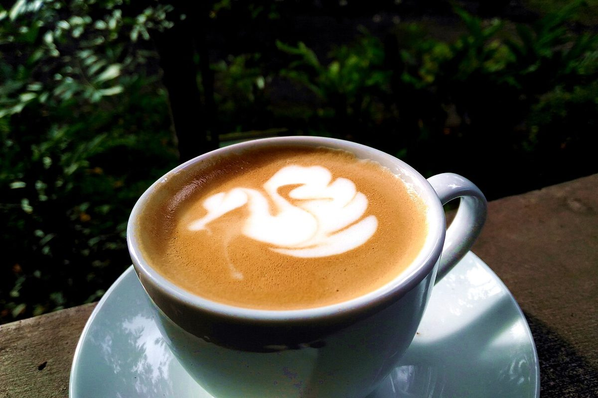

más
カフェ / 愛媛県松山市
ますcafe
a＋´＝á
アキュート・アクセント / más(スペイン語で「もっと」)
愛媛県松山市にあるカフェ「ますcafe」のご案内ページです。営業時間やメニューなど、詳しいことは準備中。確認できているのは所在地・電話・Instagramです。
制作側の連想
「ます」に、印をひとつ。
店名の由来は分かりません。制作側は「ますcafe」をローマ字で書くと masu cafe になることから、頭の3文字 mas と、最後の cafe を眺めて連想しました。mas の a に印をつけると más(スペイン語で「もっと」)、cafe の e に印をつけると café。a の頭に載せる印は全部で五つあるので、そのかたちをこのサイトの見出しにしています。お店の理念・由来とは無関係の、制作側の連想です。
写真のイメージ
泡ひとつぶの、紫とだいだい。
写真は松山市やお店のものではありません。サイトの色合いに合わせて選んだ、国外・撮影地不明のフリー素材です。



ご案内
お店のこと(確認できたものだけ)
| 所在地 | 〒799-2662 愛媛県松山市太山寺町６７７−１ |
|---|---|
| 電話 | 090-9455-4566 |
| 営業時間 | 準備中 |
| 定休日 | 準備中 |
| ご予約 | 準備中 |
| 駐車場 | 準備中 |
| SNS | Instagram @masu_cafe_ |